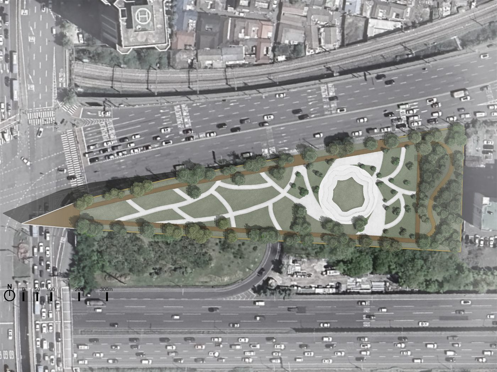
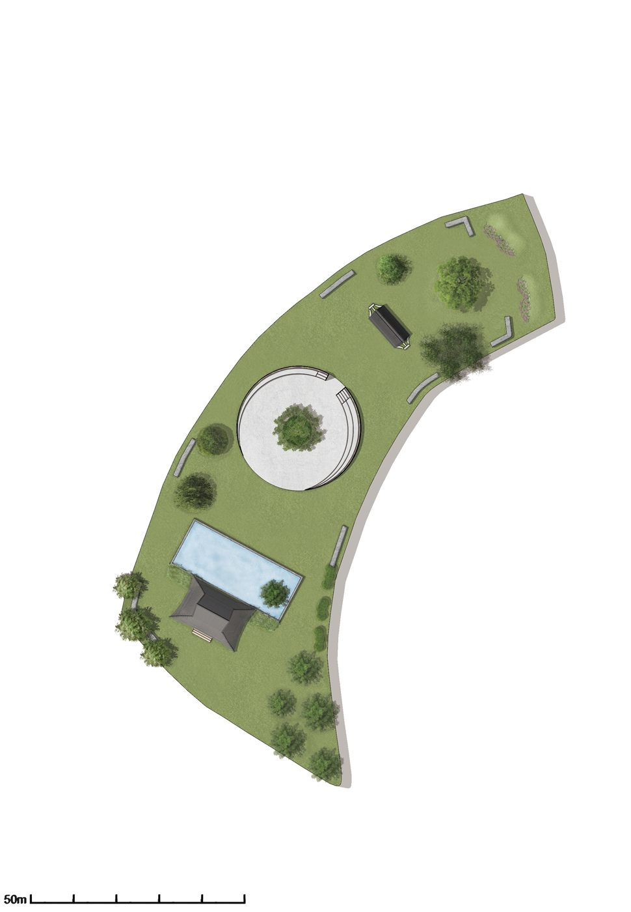

알고리즘 풀이 & 개발 지식 아카이빙 블로그
마크다운 문법을 실시간 파싱하여 복잡한 알고리즘 풀이와 웹 기술 트러블슈팅을 체계적으로 축적하는 개인 블로그입니다.
상명대학교에서 조경학을 전공하며 자연의 결을 읽고 사람의 움직임을 담는 공간을 연구합니다. 장소의 고유한 이야기를 존중하며 식재, 동선, 경관이 오래 이어지는 풍경을 설계합니다.
장소를 읽고 사람과 자연의 관계를 설계하는 원칙
지형, 식생, 기억, 이용자의 움직임을 관찰하고 기록합니다. 장소가 가진 고유한 표정에서 설계의 단서를 찾습니다.
계절의 변화와 시간의 흐름을 고려합니다. 식물의 성장과 물의 흐름까지 생각해 오래 지속되는 경관을 지향합니다.
걷고, 머물고, 만나는 장면을 상상합니다. 누구나 편안하게 접근하고 자연스럽게 머무를 수 있는 동선을 설계합니다.
재료의 질감, 빛과 그림자, 앉는 높이처럼 작은 요소를 꼼꼼히 다룹니다. 디테일이 공간의 경험을 결정한다고 믿습니다.
문제를 해결하기 위해 적재적소에 활용하는 기술 스택
직접 기획하고 개발한 주요 프로젝트입니다. 카드를 클릭하면 자세한 내용을 볼 수 있습니다.

서울 용산구 이촌동, 용산공원과 한강 사이에서 끊어진 생태축을 회복하는 도시숲 설계 공모전 출품작입니다. 팀 프로젝트로 참여해 마스터플랜 제작을 맡았습니다.

서울 노들섬을 대상지로, 유상곡수·화계 등 전통 조경 기법을 접목한 정원을 설계한 대한민국 전통조경대전(제2회) 출품작입니다. 팀 프로젝트로 참여해 마스터플랜 제작을 맡았습니다.
상명대학교에서의 전공 심화 및 개발 발자취
자료구조, 알고리즘, 운영체제, 컴퓨터 네트워크, 데이터베이스 등 탄탄한 컴퓨터 공학 기초 이론을 이수하고 다양한 전공 팀 프로젝트를 수행 중입니다.
팀원들과의 적극적인 Git 브랜치 협업 및 코드 리뷰를 통해 학내 불편 사항을 해결하는 스터디룸 예약 및 일정 관리 웹 서비스를 구현했습니다.
전통조경의 공간성과 장소성을 현대적으로 해석한 팀 프로젝트 "청도서원(淸道書院)"으로 대한민국 전통조경대전 제2회에서 장려상을 수상했습니다.
현대적인 웹 인터랙션 기법과 클린 아키텍처를 연구하며, 개발 과정에서 발생한 트러블슈팅과 배운 점을 블로그에 체계적으로 기록하고 있습니다.
협업 제안, 프로젝트 문의 또는 이야기를 나누고 싶다면 메시지를 보내주세요.